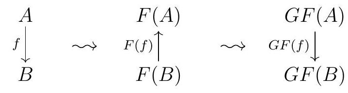
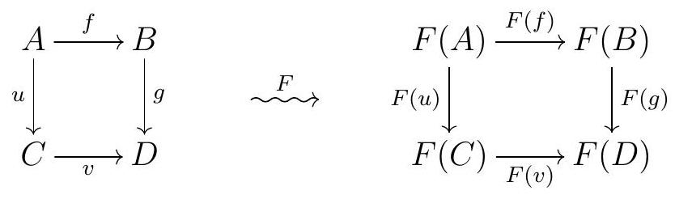
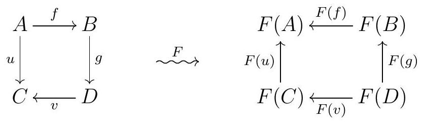
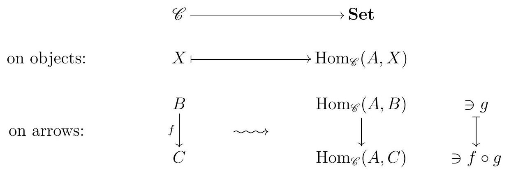
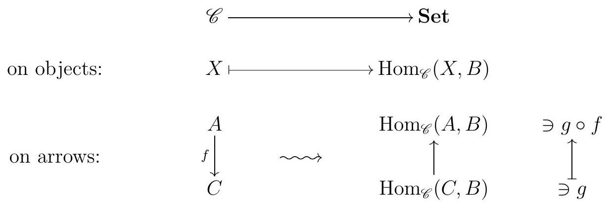

Many mathematical constructions are functorial, in the sense that they behave well with respect to morphisms. In the formalism of category theory, this means that we can think of a functorial construction as a functor.
Definition1.25.Functor.
Let \(\mathscr{C}\) and \(\mathscr{D}\) be categories. A covariant functor \(F: \mathscr{C} \longrightarrow \mathscr{D}\) is a mapping that assigns to each object \(A\) in \(\mathscr{C}\) an object \(F(A)\) in \(\mathscr{D}\text{,}\) and to each arrow \(f \in \operatorname{Hom}_{\mathscr{C}}(A, B)\) an arrow \(F(f) \in \operatorname{Hom}_{\mathscr{D}}(F(A), F(B))\text{,}\) such that
\(F\) preserves the composition of maps, meaning \(F(f g)=F(f) F(g)\) for all arrows \(f\) and \(g\) in \(\mathscr{C}\text{,}\) and
\(F\) preserves the identity arrows, meaning \(F\left(1_{A}\right)=1_{F(A)}\) for all objects \(A\) in \(\mathscr{C}\text{.}\)
A contravariant functor\(F: \mathscr{C} \longrightarrow \mathscr{D}\) is a mapping that assigns to each object \(A\) in \(\mathscr{C}\) an object \(F(A)\) in \(\mathscr{D}\text{,}\) and to each arrow \(f \in \operatorname{Hom}_{\mathscr{C}}(A, B)\) an arrow \(F(f) \in \operatorname{Hom}_{\mathscr{D}}(F(B), F(A))\text{,}\) such that
\(F\) preserves the composition of maps, meaning \(F(f g)=F(g) F(f)\) for all composable arrows \(f\) and \(g\) in \(\mathscr{C}\text{,}\) and
\(F\) preserves the identity arrows, meaning \(F\left(1_{A}\right)=1_{F(A)}\) for all objects \(A\) in \(\mathscr{C}\text{.}\)
So a contravariant functor is a functor that flips all the arrows. We can also describe a contravariant functor as a covariant functor from \(\mathscr{C}\) to the opposite category of \(\mathscr{D}\text{,}\)\(\mathscr{D}{ }^{\text {op }}\text{.}\)
Remark1.26.
A contravariant functor \(F: \mathscr{C} \longrightarrow \mathscr{D}\) can be thought of as a covariant functor \(\mathscr{C}^{\text {op }} \longrightarrow \mathscr{D}\text{,}\) or also as a covariant functor \(\mathscr{C} \longrightarrow \mathscr{D}^{\text {op }}\text{.}\) If using one of these conventions, one needs to be careful, however, when composing functors, so that the respective sources and targets match up correctly. While we haven't specially discussed how one composes functors, it should be clear that applying a functor \(F: \mathscr{C} \longrightarrow \mathscr{D}\) and \(G: \mathscr{D} \longrightarrow \mathscr{E}\) is the same as applying a functor \(\mathscr{C} \longrightarrow \mathscr{D}\text{,}\) which we can write as \(G F\text{.}\)
For example, if \(F: \mathscr{C} \longrightarrow \mathscr{D}\) and \(G: \mathscr{D} \longrightarrow \mathscr{E}\) are both contravariant functors, the composition \(G F: \mathscr{C} \longrightarrow \mathscr{E}\) is a covariant functor, since

So we could think of \(F\) as a covariant functor \(\mathscr{C} \longrightarrow \mathscr{D}^{\text {op }}\) and \(G\) as a covariant functor \(\mathscr{D}^{\text {op }} \longrightarrow \mathscr{E}\text{.}\) Similarly, if \(F: \mathscr{C} \longrightarrow \mathscr{D}\) is a covariant functor and \(G: \mathscr{D} \longrightarrow \mathscr{E}\) is a contravariant functor, \(G F: \mathscr{C} \longrightarrow \mathscr{E}\) is a contravariant functor. In this case, we can think of \(G\) as a covariant functor \(\mathscr{D} \longrightarrow \mathscr{E}^{\mathrm{op}}\text{,}\) so that \(G F\) is now a covariant functor \(\mathscr{C} \longrightarrow \mathscr{E}^{\mathrm{op}}\text{.}\)
Any functor sends isos to isos, since it preserves compositions and identities.
Here are some examples of functors you may have encountered before.
Example1.28.
Many categories one may think about are concrete categories, where the objects are sets with some extra structure, and the arrows are functions between those sets that preserved that extra structure. The forgetful functor from such a category to \(\Set\) is the functor that, just as the name says, forgets that extra structure, and sees only the underlying sets and functions of sets. For example, the forgetful functor \(\mathbf{G r} \longrightarrow\)\(\Set\) sends each group to its underlying set, and each group homomorphism to the corresponding function of sets.
The identity functor\(1_{\mathscr{C}}\) on any category \(\mathscr{C}\) does what the name suggests: it sends each object to itself and each arrow to itself.
Given a group \(G\text{,}\) the subgroup \([G, G]\) of \(G\) generated by the set of commutators
\begin{equation*}
\left\{g h g^{-1} h^{-1} \mid g, h \in G\right\}
\end{equation*}
is a normal subgroup, and the quotient \(G^{\text {ab }}:=G /[G, G]\) is called the abelianization of \(G\text{.}\) The group \(G^{\text {ab }}\) is abelian. Given a group homomorphism \(f: G \rightarrow H, f\) automatically takes commutators to commutators, so it induces a homomorphism \(\tilde{f}: G^{\mathrm{ab}} \rightarrow H^{\mathrm{ab}}\text{.}\) More precisely, abelianization gives a covariant functor from \(\Grp\) to \(\Ab\text{.}\)
The unit group functor\(-^{*}\) : \(\Ring\)\(\rightarrow\)\(\Grp\) sends a ring \(R\) to its group of units \(R^{*}\text{.}\) To see this is indeed a functor, we should check it behaves well on morphisms; and indeed if \(f: R \rightarrow S\) is a ring homomorphism, and \(u \in R^{*}\) is a unit in \(R\text{,}\) then
so \(f(u)\) is a unit in \(S\text{.}\) Thus \(f\) induces a function \(R^{*} \rightarrow S^{*}\) given by restriction of \(f\) to \(R^{*}\text{,}\) which must therefore be a group homomorphism since \(f\) preserves products.
Fix a field \(k\text{.}\) Given a vector space \(V\text{,}\) the collection \(V^{*}\) of linear transformations from \(V\) to \(k\) is again a \(k\)-vector space, the dual vector space of \(V\text{.}\) If \(\varphi: W \rightarrow V\) is a linear transformation and \(\ell: V \rightarrow K\) is an element of \(V^{*}\text{,}\) then \(\ell \circ \varphi: W \rightarrow k\) is in \(W^{*}\text{.}\) Doing this for all elements \(\ell \in V^{*}\) gives a function \(\varphi^{*}: V^{*} \rightarrow W^{*}\text{,}\) and one can show that \(\varphi^{*}\) is a linear transformation. The assignment that sends each vector space \(V\) to its dual vector space \(V^{*}\) and each linear transformation \(\varphi\) to \(\varphi^{*}\) is a contravariant functor on Vect- \(k\text{.}\)
Localization is a functor. Let \(R\) be a ring and \(W\) be a multiplicatively closed set in \(R\text{.}\) There is localization at \(W\) induces a a functor \(R\)\(\mod\)\(\longrightarrow W^{-1} R\)\(\mod\) that sends each \(R\)-module \(M\) to \(W^{-1} M\text{,}\) and each \(R\)-module homomorphism \(\alpha: M \longrightarrow N\) to the \(R\)-module homomorphism \(W^{-1} \alpha: W^{-1} M \longrightarrow W^{-1} N\text{.}\)
Remark1.29.
If we apply a covariant functor to a diagram, then we get a diagram of the same shape:

However, if we apply a contravariant functor to the same diagram, we get a similar diagram but with the arrows reversed:

Definition1.30.Category of Small Categories.
The category Cat has objects all small categories and arrows all functors between them.
SubsectionProperties of Functors
If we think about functors as functions between categories, it's natural to consider what would be the appropriate versions of the notions of injective or surjective.
Definition1.31.
A covariant functor \(F: \mathscr{C} \longrightarrow \mathscr{D}\) between locally small categories is
faithful if all the functions of sets
\begin{equation*}
\begin{gathered}
\operatorname{Hom}_{\mathscr{C}}(A, B) \longrightarrow \operatorname{Hom}_{\mathscr{D}}(F(A), F(B)) \\
f \longmapsto F(f)
\end{gathered}
\end{equation*}
are injective.
full if all the functions of sets
\begin{equation*}
\begin{gathered}
\operatorname{Hom}_{\mathscr{C}}(A, B) \longrightarrow \operatorname{Hom}_{\mathscr{D}}(F(A), F(B)) \\
f \longmapsto F(f)
\end{gathered}
\end{equation*}
are surjective.
fully faithful if it is full and faithful.
essentially surjective if every object \(d\) in \(\mathscr{D}\) is isomorphic to \(F c\) for \(c\) in \(\mathscr{C}\text{.}\)
an embedding if it is fully faithful and injective on objects.
Example1.32.
The forgetful functor \(R\)\(\mod\)\(\longrightarrow\)\(\Set\) is faithful since any two maps of \(R\)-modules with the same source and target coincide if and only if they are the same function of sets. This functor is not full, since there not every functions between the underlying sets of two \(R\)-modules is an \(R\)-module homomorphism.
Remark1.33.
A fully faithful functor is not necessarily injective on objects, but it is injective on objects up to isomorphism.
Remark1.34.
A subcategory \(\mathscr{C}\) of \(\mathscr{D}\) is full if the inclusion functor \(\mathscr{C} \longrightarrow \mathscr{D}\) is full.
Example1.35.
The category \(\mathbf{A b}\) of abelian groups is a full subcategory of \(\Grp\text{.}\)
The category whose objects are all sets and with arrows all bijections is a subcategory of \(\Set\) that is not full.
To close this section, here are the two of the most important functors we will discuss this semester:
Definition1.36.\(\Hom\) Functors.
Let \(\mathscr{C}\) be a locally small category. An object \(A\) in \(\mathscr{C}\) induces two \(\Hom\) functors:
The covariant functor \(\operatorname{Hom}_{\mathscr{C}}(A,-): \mathscr{C} \longrightarrow\) Set is defined as follows:

We may refer to this functor as the covariant functor represented by \(A\text{.}\) Given an arrow \(f\) in \(\mathscr{C}\text{,}\) we write \(f_{*}:=\operatorname{Hom}_{\mathscr{C}}(A, f)\text{.}\) It is easier to see what \(f_{*}\) does through the following commutative diagram:
The contravariant functor \(\operatorname{Hom}_{\mathscr{C}}(-, B): \mathscr{C} \longrightarrow\Set\) is defined as follows:

We may refer to this functor as the contravariant functor represented by \(B\text{.}\) Given an arrow \(f\) in \(\mathscr{C}\text{,}\) we write \(f^{*}:=\operatorname{Hom}_{\mathscr{C}}(A,-)\text{.}\) It is easier to see what \(f^{*}\) does through the following commutative diagram: